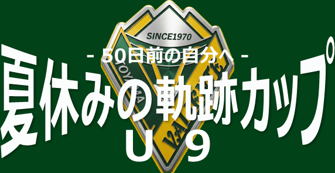
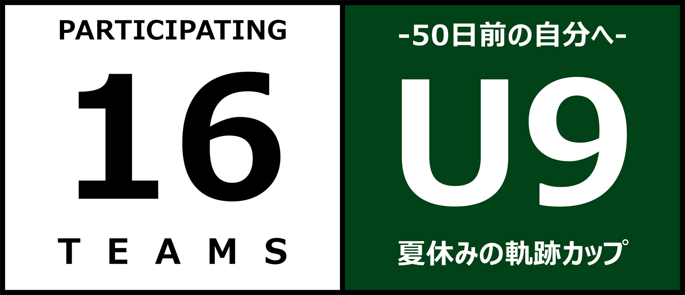
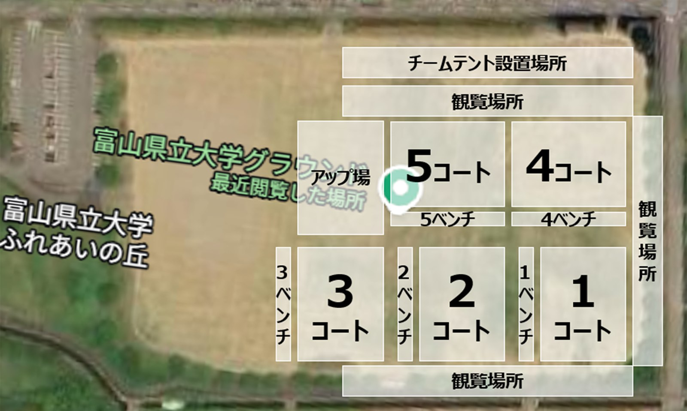

* が付いたチームは、正式なチーム名を確認中です。
各チームのエンブレム画像をいただければ、文字の代わりに差し替えられます。
GROUP LEAGUEグループリーグ 3チーム × 6ブロック
▼
各ブロックの1・2位が上位リーグ／3位が下位リーグへ
CLASS LEAGUEクラスリーグ 3チーム × 6ブロック
上から順に見ていき、決まった時点でその順位になります。
▼
クラスリーグの順位で進み先が決まります
KNOCKOUT ROUND決勝トーナメント・順位決定戦
引き分けの場合はサドンデスPKで勝者を決めます。
GROUP LEAGUEグループリーグ 4チーム × 4組
上から順に見ていき、決まった時点でその順位になります。
▼
各組の順位で進み先が決まります
KNOCKOUT ROUND決勝トーナメント・順位決定戦
引き分けの場合はサドンデスPKで勝者を決めます。
試合結果の読み込み中…
（スプレッドシートの設定が済むと、ここに全試合が並びます）
順位表の読み込み中…
（スコアが入力されると自動で並び替わります）
※ 3チーム × 6ブロックの総当たり（各チーム2試合・全18試合）。
各ブロックの1・2位はクラスリーグの上位リーグへ、3位は下位リーグへ進みます。
※ 4グループ × 4チームの総当たり（各チーム3試合・全24試合）。
各組の1位が1位トーナメント、2位が2位トーナメント、3位が3位トーナメント、4位が4位トーナメントに進みます。
順位表の読み込み中…
（グループリーグの結果が出そろうと対戦相手が決まります）
※ グループリーグの成績で2つのクラスに分かれます。
上位リーグ（3チーム × 4ブロック）… 各ブロックの1・2位＝12チーム
下位リーグ（3チーム × 2ブロック）… 各ブロックの3位＝6チーム
ここでの順位が、決勝トーナメント・順位決定戦の組み合わせになります。
トーナメントの読み込み中…
（グループリーグの結果に連動して対戦カードが埋まります）
※ 上位リーグの各組1位が1位トーナメント（1-4位決定戦）、
2位が2位トーナメント（5-8位決定戦）、3位が3位トーナメント（9-12位決定戦）へ。
下位リーグは1位同士・2位同士・3位同士で対戦し、13-18位が決まります。
上位リーグ進出チームは6試合、下位リーグ進出チームは5試合。18位まですべて決まります。
※ 順位別に4つのトーナメントを行います。
1位トーナメントで1〜4位、2位トーナメントで5〜8位、
3位トーナメントで9〜12位、4位トーナメントで13〜16位が決まります。
各トーナメントは4チームで、準決勝2試合 → 決勝・3位決定戦（計4試合）。
全チームが5試合（予選3＋トーナメント2）を戦い、16位まですべて決まります。
最終順位の読み込み中…
（決勝トーナメント終了後に確定します）

画像をタップすると大きく表示できます
駐車場のご案内は、トップページの「駐車場の利用に関するお願い」からご覧いただけます。